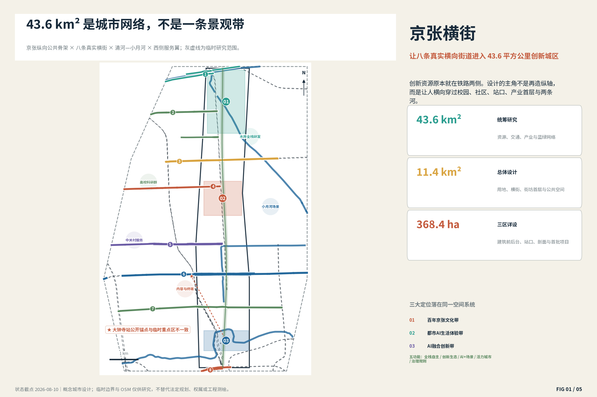
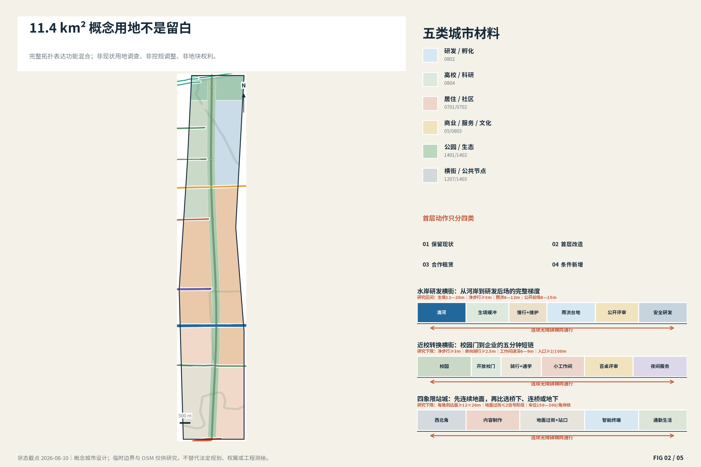
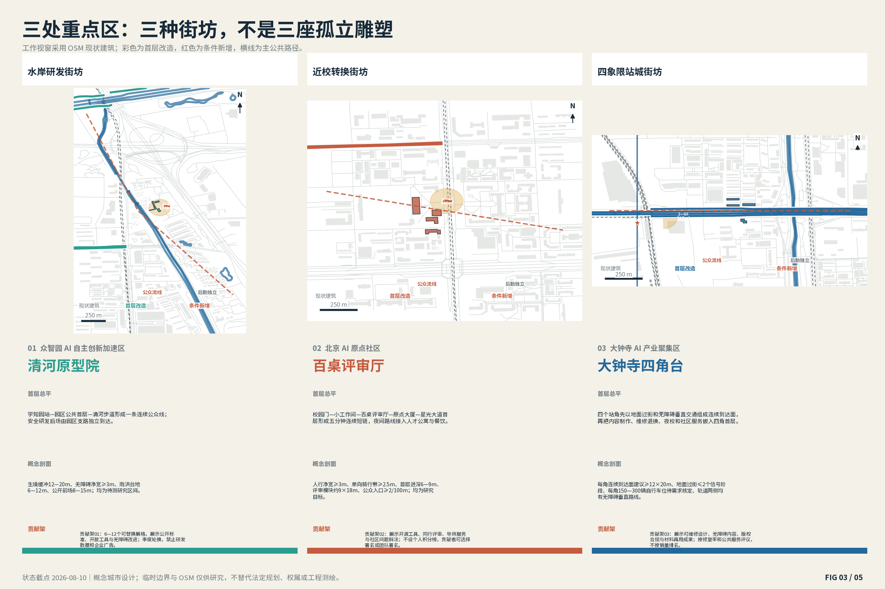
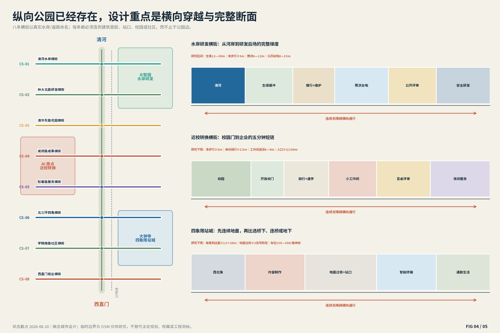
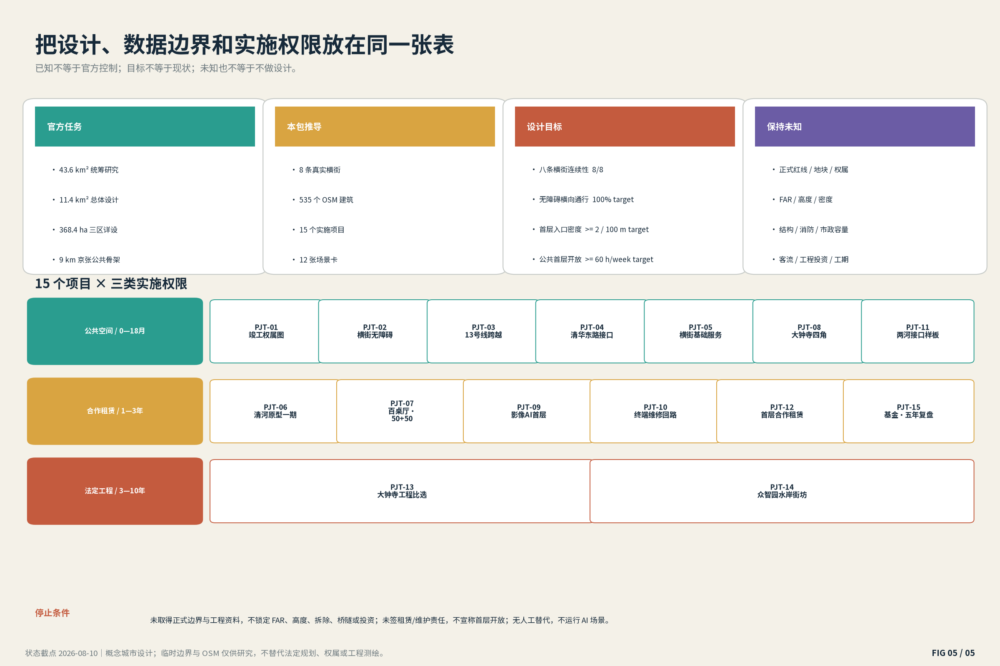

京张横街 / JINGZHANG CROSS-STREETS
以八条真实横向街道把京张公园、校园、社区、站口、产业首层与清河—小月河连接为43.6平方公里完整创新城区；三处重点区均给出街坊级空间原型、运营与分期。
京张横街 / JINGZHANG CROSS-STREETS
让八条真实横向街道进入 43.6 平方公里创新城区。本方案首先是城市空间方案，品牌只用于给八条真实横街建立共同识别。所有空间落地内容均为概念建议、参考方案，可供专业团队深化研究，不替代法定规划或政府审定。
设计依据与资料清单
京张铁路遗址公共空间一期已开放；2026年7月，二期配套项目又确认完工并形成鱼骨状慢行、骑行、慢跑与社区节点。因此本方案不再把9公里公园当空白设计对象，而把它视为已建公共骨架，主要工作转向公园两侧第一排街坊、真实横向道路、校园与园区门口、轨道站四角、桥下以及清河—小月河接口。清华东路南侧公共空间已经获批，河道整治也在推进；这些项目进入底图，方案只补接口，不重复造项目。来源 来源
资料按四级使用：公告和现行法规决定任务及禁止越界；官方工程与更新公示决定已建、在建和真实锚点；OSM只提供截至2026-08-10的道路、轨道、水系、站点和建筑背景；仓库 provisional polygon 只用于临时拓扑和自检。43.6 km²与11.4 km²采用公告口径，约37 km²只作早期报道背景。大钟寺临时重点区矩形与公开站点锚点错位，因此图上同时保留“临时范围”和“站点工作视窗”，主动暴露冲突，而不是把错位矩形画成精确总平。来源 来源
目前仍未知的控制条件包括：正式范围GIS、用地与地块、权属租约、建筑结构与楼层、容积率和高度、道路红线和客流、文保GIS、市政容量与投资。未知不等于不设计：本包已经完成概念用地全覆盖、八条横街、三处街坊级原型、典型剖面、首层运营、场景和分期；但上述未知决定哪些内容需要在下一阶段被替换或校准。完整影响写入 assumptions.json，不是用缺数据替代设计。空间数据

三层范围工作框架
43.6 km²、11.4 km²和368.4 ha不是三张相同比例的图。统筹研究层解决西侧中关村服务翼、京张公共骨架、东侧小月河场景翼、高校院所、轨道和河流之间的关系；总体设计层把关系落实到公园两侧第一排街坊、概念用地、横街断面、交通和蓝绿系统；三个重点区才进入建筑首层、街坊、站口、前后台和首批项目。三级都设计，但精度不同。深度 指标
总概念“京张横街”不是再画一条纵向创新带，而是承认创新资源本来分布在铁路两侧：人必须横向穿越，才能从校园进入园区、从社区进入公园、从站口进入企业、从西侧服务进入东侧场景。八条横街全部沿真实水岸或道路命名，不另造“六横三庭”等押韵结构。纵向京张公园负责慢行和历史连续，横街负责日常城市生活和创新转换；两者交叉处形成可运营的公共一层。空间数据
任务书的三大定位不是另加三条口号，而是分别落到可见空间与验收动作：
| 三大定位 | 空间载体 | 本方案的落实 |
|---|---|---|
| 百年京张文化带 | 京张公园、北京北站、清华园车站、桥梁与轨道竖向关系 | 把真实遗产分成站台—工作台—共享桌三类空间章节；不复制铁路符号。 |
| 都市AI生活体验带 | 八条横街的站口、社区、校园门、公共首层与两河接口 | 十二个场景必须有真实房间、人工替代、开放时段和停止条件，普通生活服务不让位于展示。 |
| AI融合创新带 | 校园策源—原点转换—众智园研发—大钟寺内容终端—小月河城市场景 | 以步行短链、公开前场/安全后场和受控测试把研究、生产、服务与城市使用连起来。 |
五大功能通过三区两翼协同：中关村服务翼提供专业服务与要素入口，AI原点把研究转成团队和样机，众智园承担全栈研发与公开标准讨论，大钟寺把内容、终端、维修和消费带到城市首层，小月河场景翼提供受控公共测试；测试结论再返回课程、标准工作坊和下一轮空间修补。这个回路只处理具体项目与自愿场景，不建立“所有城市行为可追溯”的总治理系统。来源
| 五大功能 | 三区两翼落点 | 空间动作 | 验收/边界 |
|---|---|---|---|
| AI全栈自主创新体系 | 众智园 + CS-01/02 | 共享仪器预约、公开评审、低层共享厅与独立安全研发后场 | 开放时段、预约获得率、公众/后勤分离 |
| 世界级AI创新生态 | AI原点 + 中关村服务翼 + CS-04/05 | 50+50工位、百桌评审、八项创业门诊与人才生活服务 | 首次响应、工位周转、可负担租金与团队存续 |
| AI+场景赋能新范式 | 小月河场景翼 + 三重点区受控前场 | 四个产业测试与八个常态服务场景按空间、人员、保险和停止条件开放 | 逐卡验收、人工接管、退出与投诉关闭 |
| 智能化AI活力城市 | 八条横街 + 大钟寺四角 + 社区/校园门 | 换乘、通学、夜校、维修、托育、饮水、公厕和夜间值守构成可日常使用的城市一层 | 8/8连续、休息点≤150m、基础服务8/8 |
| AI治理全球话语权 | 众智园标准工作坊 + 横街场景开放规则 | 把隐私影响、人工替代、测试暂停、可维修设计和无障碍内容做成可公开讨论的规则与样例 | 不追踪全部城市行为；只审查自愿参与的具体场景 |
与北纬社区、未来科学城、怀柔科学城、经开区及京津冀只设置课题协作、标准研究、试制衔接、场景互认和人才服务的概念接口，不写成已经签约或获批的合作。规划创新在于把三级设计精度、产业链、公共空间、首层运营和风险退出放入同一套可核验框架，而不替代法定规划。
| 编号 | 真实横街 | 空间锚点 | 必须完成的城市动作 |
|---|---|---|---|
| CS-01 | 清河水岸横街 | 清河—京张北端—小月河汇入口 | 把滨水步道、研发院落、学知园站接驳与暗夜生境组织成一条可步行的研发水岸；不另造景观河。 |
| CS-02 | 林大北路研发横街 | 众智园南缘—学清路—学院路 | 将封闭园区第一排建筑改成公开评审、共享仪器预约、人才服务和餐饮相邻的可进入首层。 |
| CS-03 | 清华东路花园横街 | 京张公园—学院路—六道口—小月河 | 直接衔接已批的学院路会客厅、五处非机动车停车场和六个花园节点，补齐站—园—街连续界面。 |
| CS-04 | 成府路成果横街 | 五道口—高校门口—原点大厦—京张公园 | 用一公里内的小工作间、百桌评审厅、夜间学习与人才生活服务，把论文—样机—企业的转换过程留在真实街面。 |
| CS-05 | 知春路服务横街 | 中关村服务翼—知春路站—京张一期—社区 | 把法律、算力、融资、招聘和社区高频服务压到步行可达首层，同时核查知春路至大钟寺的 13 号线穿越断点。 |
| CS-06 | 北三环四角横街 | 大钟寺站四象限—13 号线—北三环—高校与社区 | 先做地面连续过街、垂直交通、四角骑行停放和可进入首层，再讨论连桥、地下空间或新增体量。 |
| CS-07 | 学院南路社区横街 | 北交大—社区—京张公园—小月河方向 | 以儿童通学、老年休息、公厕饮水、桥下运动和材料维修为主，形成不是只服务创新从业者的日常横街。 |
| CS-08 | 西直门抵达横街 | 北京北站—西直门—京张南端—城市公共交通 | 用清晰换乘、行李友好步行、历史开篇与全天服务形成城市抵达层；不把铁路文化缩成装饰符号。 |
“公共一层”被降为剖面规则，不是第二套品牌：沿每条横街逐段标注保留、开门、租赁改造、条件新增与安全后场；目标是入口真实可用、开放时段可核、无障碍连续、后勤不侵占公共路权。三处重点区分别验证水岸研发、近校转换、四象限站城三种不同街坊，而不是把同一个地标复制三遍。
统筹研究范围产业与未来城市研究
43.6 km²的创新生态采用“西侧专业服务—校园策源—原点转换—众智园全栈研发—大钟寺终端与内容—东侧城市场景”的空间分工。法律、资金、人才、国际合作和算力服务优先落在知春路、成府路等可步行首层；安全研发与共享仪器在众智园形成公开前场与受控后场；内容制作、终端试用、维修循环和消费在大钟寺形成地面可达的四象限网络。小月河和清河不是活动背景，而是已有工程，需要把生态、排水、维护与慢行放进同一断面。来源 深度
生态图谱把八类要素同时放进空间、运营和边界。尤其是“数据”不再写成抽象资源：预约/咨询数据与研发数据分离，公共空间不做持续身份识别，公开信息只保留经人工复核的聚合结果，任何具体场景都可独立停止。
| 要素 | 空间载体 | 运行机制 | 护栏 |
|---|---|---|---|
| 土地 | 存量园区、沿街首排与条件机会地 | 先保留、短租与首层适配；正式地块和权属到位后整链替换 | 不承诺征收、出让或地价 |
| 空间 | 公开前场—可进入首层—安全后场 | 三类有量纲剖面、四类建筑动作、日常/事件双状态 | 结构、消防、文保和市政核验前只作概念建议 |
| 产业 | 校园—原点—众智园—大钟寺—小月河 | 研究、评审、试制、内容/终端、维修再用和城市场景形成可步行链 | 不编造企业、产值或招商承诺 |
| 资金 | 基本公共服务、首层租赁、测试与运营基金 | 公共资金保通行维护；产权方保首层后场；测试方保保险撤场；收入按无障碍→维修→免费服务→公共节目支出 | 均为资金责任建议，不是财政承诺 |
| 人才 | 50+50工位、百桌评审、人才公寓补链与国际访客工位 | 从开放活动进入门诊、工位、设备、试制、租赁或长期合作 | 以可负担、夜间安全和原商户留存作护栏 |
| 算力 | CS-04/05算力门诊 + 受控研发后场 | 公共前台解释预约、价格和人工支持；训练/研发数据留在责任主体后场 | 容量、余热与能源收益待专业测算 |
| 数据 | 预约台、服务台、受控测试房间和年度公开摘要 | 预约/咨询与研发数据分离；公共空间不持续识别；只发布开放时长、维护响应和经人工复核的聚合结果 | 目的限定、最小采集、到期删除、人工申诉与单场景停止 |
| 场景 | 12张场景卡对应的真实房间与公共路径 | 责任主体、频次/容量、验收、人工接管、保险和停止触发一起签入开放协议 | 测试不等于批准运营，异常即停 |
众智园“全栈”不是企业名单，而是五层可读空间：基础资源留在安全后场；模型与工具进入共享工作间；智能体与应用进入团队房间；测试验证进入可关闭的受控测试廊；标准与治理讨论进入公开评审前场。任何供应商、算力容量、资金和审批均不作既定承诺。
八条横街不是平均撒点。每条都以“资源供给—现状缺口—首个可验收动作”建立任务书；400米用于厕所、饮水、餐饮等日常服务检查，800米用于创业服务与共享设施检查，1公里只用于三个重点区的创新短链研究，三种半径均是步行评估工具而非规划服务承诺。
| 横街 | 已存在的资源 | 真正断点 | 首个交付 |
|---|---|---|---|
| CS-01 | 清河、小月河、众智园、学知园站 | 河岸工程、园区边界与站口仍各自成段 | 完成站—园—河无障碍工作线和暗夜生境断面 |
| CS-02 | 众智园、腾讯学知园、东升三期604 | 园区首层、共享仪器与日常服务不连续 | 选择一排存量建筑完成公开前场与安全后场样板 |
| CS-03 | 清华东路项目、六道口、三所高校、小月河 | 已批花园、停车和校园轴尚需与京张接口合图 | 把五处停车、六花园、三校园轴接入同一竣工协调图 |
| CS-04 | 五道口、原点大厦、清华科技园、智源大厦 | 研究成果到工位、评审和企业服务之间缺少可见短链 | 先租两个首层，完成百桌评审与50+50开放工位 |
| CS-05 | 中关村服务翼、知春路站、京张一期、社区 | 法律算力融资等服务分散，13号线穿越状态待核 | 布置八项创业门诊并用现场/竣工图核验跨线需求 |
| CS-06 | 大钟寺站、北三环、北影/高校、更新组团 | 四象限过街、垂直交通、骑行停放与首层各自为政 | 逐角交付地面到达包；桥隧只进入后续工程比选 |
| CS-07 | 北交大、社区、桥下空间、学院南路 | 通学、老人休息、公厕饮水和维修等普通服务不足 | 用一条儿童/照护者路线验收基础服务与桥下城市房间 |
| CS-08 | 北京北站、西直门枢纽、京张南端 | 换乘、行李步行、历史开篇与全天服务缺少同一到达层 | 先完成一条行李/轮椅友好抵达线和首个遗产叙事节点 |
命名与视觉识别只服务空间：标志由一条留白纵缝和八条不同长度横条组成，每条横街使用自己的颜色、编号和截面图标。中文“横街”强调东西连接，英文复数 CROSS-STREETS 强调不是单一景观轴。导视在真实路名下增加“到京张公园 / 到校园 / 到小月河 / 到站口”的步行时间，不用铁路道钉、车票或机器人形象作为品牌主体。
全球案例不做拼贴。下面八例分成创新城区、铁路断裂与长期运营三组，逐项说明能迁移什么、不能照搬什么；其中没有任何案例被当作北京的尺度、气候、产权或投资结论。来源
| 案例 | 尺度 | 可迁移动作 | 不可照搬 |
|---|---|---|---|
| Singapore Rail Corridor | 24 km corridor; first 4 km central section | 用于京张纵向公园的断面分型，横街负责进入，生态段控制夜间照明。 | 热带植被、国有土地协调与北京条件不同。 |
| Singapore one-north | about 200 ha | 共享实验和青年居住必须贴公共空间与站点；活动日历与空间同步。 | JTC 的土地与招商统一权不可复制。 |
| Kashiwa-no-ha / UDCK | 13 km² vision; 272.9 ha core | 每个重点区需要一处常驻运营空间，而不是活动时临时搭台。 | 新城、单一开发商与新站点条件不同。 |
| Barcelona 22@ | 198.26 ha / 115 blocks | 每个京张街坊用产业、住房、服务、公共空间四项一起检查。 | 早期过重就业地产、后补日常生活是反面提醒。 |
| King's Cross | 67 acres; more than 40% public space | 先完整交付一条站—街—公共空间—社区链，再释放相邻项目。 | 单一权属与伦敦地价不可复制。 |
| Paris Rive Gauche | 130 ha; 26 ha rail deck | 大钟寺先以地面和既有通道连续为主，连桥与地下只作待论证选项。 | 铁路上盖成本高、周期极长且日常商业可能不足。 |
| Yangpu Waterfront | 15.5 km waterfront / 12.93 km² | 铁路遗产按系统和用途分级，不统一刷成文创街。 | 滨江地价、岸线条件与财政投入不同。 |
| Brooklyn Navy Yard | about 300 acres | 大钟寺加入品牌无关维修和小批量制作，众智园保留可负担试制后场。 | 生产安全边界仍可能形成封闭飞地。 |
综合案例得到五条实施原则：公共空间和住房/产业/服务同步；铁路遗产按系统而非物件保护；每个公共空间同时设计日常与事件、晴天与暴雨、白天与夜间；运营团队、租赁条款和维护后台在首期落位；防置换和可负担生产空间前置。它们分别进入用地、重点区、场景和项目清单，而不是停在案例页。
总体设计范围城市更新与控规深度城市设计
11.4 km²概念总平以京张公园为中央公共骨架，用八条横街切出具有真实任务的城市段落。用地层把临时总体范围完整划分为研发、教育、居住、商业服务、文化、道路和绿地开敞空间，拓扑无缝无重叠；它表达期望的功能混合，不冒充现状或法定地类。每个横街交叉段必须同时检查：第一排建筑首层、横向过街、骑行停放、社区设施、雨洪和后勤。空间数据 标准
城市更新不是“大拆大建”。建筑按四类工作：保留现状用于OSM背景与无需改变的建筑；首层改造只改变入口、可进入功能和后勤关系；合作租赁通过短期合同把空置或低效首层转为公共服务和孵化；条件新增只在控规、权属、结构、消防和文保核验后进入专业方案。没有建筑被本方案判定拆除，容积率、高度和总建筑面积保持未知。指标 深度
八条横街采用三类基本剖面：水岸研发型把生境、步道、雨洪台地、公开前场和安全后场排成连续梯度；校园转换型把校门、骑行、工作间、评审厅和夜间服务排在人的视线范围；站城四角型先解决地面过街、电梯、雨棚、停车和可进入首层，再把连桥或地下作为专业比选。所有尺寸均为关系示意，实际红线与工程尺寸待确认。
下面的量纲是设计研究下限或区间，不是现状测量和法定道路红线；正式地形、交通与市政资料到位后必须逐段替换，不能直接用于施工。
| 剖面类型 | 概念量纲与验收关系 |
|---|---|
| 水岸研发型 | 生境缓冲12—20m；无障碍净宽≥3m；雨洪台地6—12m；公开前场8—15m；研发后勤独立入口 |
| 近校转换型 | 人行净宽≥3m；单向骑行带≥2.5m；首层工作间进深6—9m；评审厅模块约9×18m；公众入口≥2/100m |
| 四象限站城型 | 每角连续到达面建议≥12×20m；地面过街≤2个信号阶段；每角150—300辆自行车位经需求核定；轨道两侧均有无障碍垂直交通 |

重点区域详细设计
三处重点区不是三个色块。每个工作视窗都绘入OSM建筑背景、真实道路/站点/水系、横向主路径、公共首层、前后台、日常和事件状态；新增建筑只画低层、可逆、可分期的空间关系。临时重点区边界仍在 key_areas.geojson 保留，细化视窗则以公告文字锚点和公开现状组织，并在大钟寺明确显示错位问题。空间数据 深度
众智园 AI 自主创新加速区：水岸研发街坊
空间发动机是“安全研发后场 + 可进入评审前场 + 清河生境边缘”。日常不是展厅空转，而是共享仪器预约、午间评审、通勤、河岸散步、餐饮；事件状态为季度原型开放日与国际标准工作坊。可使用地标“清河原型院”由公共地面、可进入建筑和必要后勤共同构成，不做孤立雕塑。第一批项目包括：学知园站—园区无障碍连接、面向清河的公共首层样板、研发后勤与公众动线分离、暗夜生境与雨洪台地。所有建筑与地块动作在正式权属、结构、消防和规划条件确认前均为概念建议。
| 详设层 | 非标定街坊设计 |
|---|---|
| 街坊首层总平 | 学知园站—园区公共首层—清河步道形成一条连续公众线；安全研发后场由园区支路独立到达。 |
| 首层功能 | 沿河首排依次布置预约前厅、等候咖啡、公开评审、共享厅；涉密实验、设备间与卸货留在后场。 |
| 公众/后勤流线 | 公众：站口→预约→评审→水岸；后勤：支路→卸货→实验后场；两线只在有人工管理的预约厅交接。 |
| 概念剖面量纲 | 生境缓冲12—20m、无障碍净宽≥3m、雨洪台地6—12m、公开前场8—15m；均为待测研究区间。 |
| 地标空间构成 | 清河台地 + 有顶评审厅 + 共享设备预约厅 + 独立安全后场 |
| 日常/事件切换 | 日常保留通勤、预约和河岸休息；开放日仅在前场增设可撤展台，后场边界不移动。 |
北京 AI 原点社区：近校转换街坊
空间发动机是“校园门—小工作间—公开评审—孵化—生活服务的短链”。日常不是展厅空转，而是开放工位、法务算力门诊、夜间学习、托育与平价餐饮；事件状态为每周同行评审、每月成果上街、毕业季驻地。可使用地标“百桌评审厅”由公共地面、可进入建筑和必要后勤共同构成，不做孤立雕塑。第一批项目包括：成府路校园门口慢行修补、原点大厦—星光大道连续首层、50+50 分布式开放工位、低扰动共享长屋。所有建筑与地块动作在正式权属、结构、消防和规划条件确认前均为概念建议。
| 详设层 | 非标定街坊设计 |
|---|---|
| 街坊首层总平 | 校园门—小工作间—百桌评审厅—原点大厦—星光大道首层形成五分钟连续短链，夜间路线接入人才公寓与餐饮。 |
| 首层功能 | 6—9m进深的小工作间可按小时拆分；约9×18m评审模块可合并；法务、算力、招聘与托育沿街共用等候区。 |
| 公众/后勤流线 | 公众：校门→工作间→评审→服务；团队后勤：侧巷→储物/设备→工作间后门；夜间由可见值守点串联。 |
| 概念剖面量纲 | 人行净宽≥3m、单向骑行带≥2.5m、首层进深6—9m、评审模块约9×18m、公众入口≥2/100m；均为研究目标。 |
| 地标空间构成 | 可分隔百桌大厅 + 两侧小工作间 + 夜间学习廊 + 独立储物与设备后场 |
| 日常/事件切换 | 日常为工位、门诊和学习；评审日滑移隔断打开成一厅，活动结束恢复多个小房间，不占街道通行。 |
大钟寺 AI 产业聚集区：四象限站城街坊
空间发动机是“地面连续优先的四象限站口 + 内容制作 + 智能终端 + 通勤生活”。日常不是展厅空转，而是换乘、骑行停放、维修退换、青年夜校、社区服务；事件状态为小型发布、公共放映、终端试用与声音文化夜。可使用地标“大钟寺四角台”由公共地面、可进入建筑和必要后勤共同构成，不做孤立雕塑。第一批项目包括：四角过街与垂直交通审计、四象限非机动车静态交通、北影—大钟寺内容制作首层、智能终端维修与循环柜台。所有建筑与地块动作在正式权属、结构、消防和规划条件确认前均为概念建议。
| 详设层 | 非标定街坊设计 |
|---|---|
| 街坊首层总平 | 四个站角先以地面过街和无障碍垂直交通组成连续到达面，再把内容制作、维修退换、夜校和社区服务嵌入四角首层。 |
| 首层功能 | 东侧共享屋承接试用与维修，北侧内容制作，西侧换乘服务，南侧社区与夜校；每角保留雨棚、停放和人工问询。 |
| 公众/后勤流线 | 乘客：站口→四角到达面→首层服务；货运：外围道路→分时装卸→维修/制作后场；活动排队不得回堵站口。 |
| 概念剖面量纲 | 每角连续到达面建议≥12×20m、地面过街≤2个信号阶段、每角150—300辆自行车位待需求核定、轨道两侧均有无障碍垂直路线。 |
| 地标空间构成 | 四个有顶到达台 + 分布式首层服务 + 统一无障碍导视 + 维修/制作独立后场 |
| 日常/事件切换 | 日常保持换乘、维修与夜校；发布或放映只使用单一街角并限流，另外三角持续承担通行和社区服务。 |
三处地标共用五项准入：日常可进入、至少一种公共服务、具备运营后台、无障碍连续、活动退场后仍有用途。清河原型院是“水岸+研发前场+后勤”的街坊；百桌评审厅是可分隔的低扰动共享长屋；大钟寺四角台是分布式站口系统。它们的城市形象来自被使用的剖面，不靠高塔和巨大屏幕。
荣誉展示采用三处“贡献架”，是地标的一部分，不另建荣誉馆。只展示贡献者自愿公开、可由运营团队人工核验的开放工具、标准参与、导师/公共服务、无障碍改进、维修再用和社区解题；不记录全部城市行为，不采集个人轨迹，不设个人积分榜，也不把企业广告当荣誉。每项注明贡献主体、公共用途、展示期限、纠错/撤回渠道与退出方式，到期进入公开目录或撤下。来源
| 空间节点 | 展示内容 | 空间与轮换 |
|---|---|---|
| 清河原型院 | 公开标准、开放工具、无障碍改进 | 6—12个可替换展格；季度轮换 |
| 百桌评审厅 | 开源工具、同行评审、导师服务、社区解题 | 评审日上墙，最长展示六个月 |
| 大钟寺四角台 | 可维修设计、无障碍内容、版权合规、材料再用 | 按公共服务结果评议，不按销量排名 |

AI 创新生态、人才画像与 AI+ 场景
方案以七类实际使用者校核空间，不把“人才”抽象成统一年轻人。每类画像都有完整日常任务，尤其把居民、行动不便者和运营人员列为与研究者同等重要的设计主体。来源 指标
| 编号 | 使用者 | 一天中必须顺利完成的事 |
|---|---|---|
| P-01 | 高校研究者 / 学生 | 15 分钟内找到公开评审、共享工位、平价餐饮与夜间安全返回路线 |
| P-02 | 一人公司与小团队 | 按小时使用工作间，按周获得法务、算力、招聘与样机展示支持 |
| P-03 | 硬件工程师与测试员 | 研发后勤不穿越公共人流，并能在受控前场完成演示和人工接管 |
| P-04 | 沿线居民与照护者 | 通学、就医、休息、饮水、公厕、买菜不被创新活动挤出 |
| P-05 | 轮椅使用者与行动不便老人 | 跨街、站口、坡道、电梯和休息点形成连续链，数字服务保留人工替代 |
| P-06 | 国际访客与合作方 | 从西直门或学知园抵达后，不依赖熟人即可理解空间、预约参访并进入公开活动 |
| P-07 | 公园与街区运营人员 | 拥有储物、维修、夜间值守、垃圾分类、活动布撤场和投诉处理的真实后台 |
十二张场景卡中四张是明确的产业测试，其他是常态服务、内容生产和公共空间使用。每张都写清真实房间、频次/容量、验收指标和独立停止触发；场景只能在对应空间、人员、保险、隐私和停止条件具备后运行，不因“AI”获得额外公共路权。来源 指标
| 编号 | 类型 | 场景 | 真实空间 | 责任主体 | 数据/人工边界 | 频次/容量 | 验收 | 单卡停止触发 |
|---|---|---|---|---|---|---|---|---|
| SCN-01 | 测试 | 受控原型评审街 | 清河原型院前场 + 可关闭测试廊 | 园区运营方 + 测试企业 + 人工安全员 | 设备遥测最小化；不采集路人身份；异常由人工接管 | 每月1次；1条测试廊；观察者≤40人 | 每场测试有边界、接管时间和撤场记录 | 测试越出围合边界、人工急停无效或安全员离岗即停 |
| SCN-02 | 测试 | 低速园区物流窗口 | 后勤巷 + 受控交叉口 + 室内交接柜 | 物业 + 物流方 + 交管专业团队 | 限定时段和路线；公开路权不因测试让位 | 工作日低峰2小时；同时≤4台低速设备 | 零占用无障碍通道，人工接管可在限定时间内完成 | 占用无障碍/消防路线或单场两次人工险情接管即停 |
| SCN-03 | 测试 | 清河生境观察台 | 暗夜河岸 + 雨洪台地 + 公众观察点 | 河道、公园、学校与志愿者联合小组 | 只采集水位、温湿度、声级和人工物种记录 | 连续环境记录；季度人工物种复核；观察点≤12人 | 夜间照明边界、生境连续性和人工复核覆盖 | 照明越过暗夜边界、传感器采到个人信息或雨洪警戒即停 |
| SCN-04 | 运营 | 共享仪器街面预约 | 公开预约台 + 安全后场 + 等候咖啡 | 园区平台与设备持有机构 | 预约数据与研发数据分离；到场人工核验 | 工作日开放≥60小时/周；等候座位6—12个 | 开放时段、设备利用率与小团队获得次数 | 预约与研发数据混用、等候阻塞公共通行或后场失守即停 |
| SCN-05 | 运营 | 百桌同行评审 | 可分隔长屋 + 街边外摆 + 静音小室 | 高校、孵化器与开发者社群轮值 | 默认线下评审；公开资料与保密项目物理分区 | 每周2场；40—100张可拆桌；消防核准后120—300席 | 每周开放时长、跨机构席位与后续入驻转化 | 疏散被占、公开与保密项目失去物理分区或噪声越界即停 |
| SCN-06 | 运营 | 50+50 分布式开放工位 | 两个相距步行五分钟的小型首层，而非新建大孵化器 | 属地、园区和社会运营方 | 实名合同由运营后台保存；公共空间不做人脸门禁 | 总计100席；每周开放≥60小时；两个首层相距≤5分钟 | 席位周转、夜间安全、租金可负担与团队存续 | 租金超出合同可负担带、夜间无人值守或无障碍路线中断即停 |
| SCN-07 | 运营 | 八项创业门诊 | 沿成府路连续的小房间：政策、资金、算力、人才、伙伴、智力、空间、场景 | 专业服务机构按日值班 | 咨询记录由各专业主体持有；公共屏只显示匿名排队 | 8个服务房间轮值；首次响应目标≤1个工作日 | 首次响应时间和转入长期服务比例 | 咨询资料被公共屏识别、无人工专业人员或利益冲突未披露即停 |
| SCN-08 | 运营 | 夜间通学与照护链 | 站口—校园门—餐饮—人才公寓之间的照明、座椅、求助点 | 街道、学校、物业和商户 | 不新增持续身份追踪；依靠可见人员与人工求助 | 每日18:00—23:00；休息点间距≤150米 | 连续亮灯界面、150 米休息点目标和人工响应 | 连续照明/人工求助中断、眩光扰民或任一无障碍断点未导行即停 |
| SCN-09 | 测试 | 四象限终端试用 | 四个小型室内试用室 + 地面连续过街 | 终端企业、消费者组织与站区运营方 | 试用者主动加入；现场可删除记录；非参与通勤者不采集 | 季度试用周；4间室内试用室；每室≤8人 | 退出便利、无障碍可用和人工售后完成率 | 未主动同意、无法现场删除、非参与通勤者被采集或无人工售后即停 |
| SCN-10 | 运营 | 北影内容制作首层 | 配音、字幕、音频描述、小放映与版权咨询相邻 | 高校、内容机构、无障碍顾问和版权专业方 | 训练素材必须具有授权；人物声音和肖像单独同意 | 每月2场小放映；单场≤80席；日常5个制作房间 | 可访问内容比例、授权完备率与公开放映场次 | 授权链不完整、无字幕/音频描述或声光越过约定边界即停 |
| SCN-11 | 运营 | 终端维修与循环柜台 | 维修、退换、备件、材料回收和二次销售共用首层 | 品牌无关的第三方维修与生产者责任组织 | 维修前本地清除个人数据；无法清除则拒绝流转 | 日常8个维修工位；至少1个无障碍工位 | 修复率、再使用率和可负担服务份额 | 个人数据无法清除、电池安全无法隔离或去向回执缺失即停 |
| SCN-12 | 运营 | 横街无障碍接力 | 八条横街的站口、坡道、过街、休息点、公厕与人工服务台 | 公共空间运营团队 + 残障使用者代表 | 现场共测优先；导航只是辅助，不以定位数据替代空间整改 | 每季度8条路线逐街复验；共测组≥12人且含残障代表 | 八条连续路线逐条验收，问题关闭需使用者复核 | 发现无替代路线的安全断点即关闭相关段并转入修补 |
四项共同底线：公共区域不做持续身份追踪；数字服务必须保留人工路径；测试参与自愿且可随时退出；自动系统异常时由明确人员接管并可停止。机器人、导览或算法不是地标，只有当它们减少真实障碍、提高服务或支持产业测试时才进入项目。
用地、建筑规模与拆改留方案
概念用地使用自然资源部分类代码，完整覆盖临时11.4 km²范围，但只表达“应该形成什么功能组合”。中央公园采用1401、河流和生境接口采用1402；高校与科研邻接段采用0802/0804；站城和企业服务段采用05；既有生活段保留0701/0702；历史与内容节点采用0803；八条横街的研究性交通界面采用1207、与京张交叉的公共节点采用1403。分区边界沿真实横街、公园曲线和水岸逐层裁切，不再用等宽条格；面积从GeoJSON自动复算，不能反推控规。空间数据 指标
建筑图层同时包含三处工作视窗内的OSM现状轮廓和少量概念动作。现状建筑只提供街坊肌理；被标记为首层改造的建筑仍默认保留主体；条件新增体量用于说明“前场—后场—庭院—街道”的关系，不是建筑方案。拆除数量为零不是设计承诺，而是本阶段拒绝在没有结构、产权和文保调查时做拆除判断。深度
在没有法定地块和分母时，本方案不伪造FAR，却也不把体量留空：以三种“研究包络”控制首层深度、占地、层数、前后台和退台关系。它们只对应当前工作视窗；正式控规、结构、消防和文保条件任一到位即重算。青年住房先与官方报道的4000+人才公寓做通勤补链，再判断新增需求，该数字仅为报道口径。来源
| 工作视窗 | 非标定体量研究包络 |
|---|---|
| KA-01 | 保留研发主体；条件新增1—3层；共享厅占地约1,250m²；临水建筑退后公开前场与生境缓冲，不设塔楼 |
| KA-02 | 保留为主、首层改造优先；条件新增1—4层；可逆长屋占地约986m²；小房间沿街、保密空间入后场 |
| KA-03 | 以存量楼宇和地面四角改造为主；条件新增2—6层；东侧共享屋占地约717m²；不以高塔代替站城连通 |
小工作间应能分隔、合并和按小时使用；公共评审厅必须有独立安全后场；骑行、厕所、设备和储物不能从公共空间临时挤占。正式控规取得后，再把每一处概念单元替换为地块编号、允许功能、FAR、高度、退线、公共贡献和实施主体；在此之前，上述层数与占地只用来检验空间关系。
交通、轨道、市政与公共服务设施
交通图同时显示地下京张高铁、地面/高架13号线、其他轨道站、八条横街、京张纵向三道和清河—小月河。对“连通”的判定不是地图上相交，而是人能连续通过：站口有电梯或坡道、过街等待可接受、骑行不被停车切断、桥下有照明和净高、横街到公园有真实入口。大钟寺四象限先做地面和既有设施改善，桥、隧、地下连通与轨道工程不作可行性结论。来源 深度
清华东路已批约1900辆非机动车停车位，方案把它作为现状项目接口，而不是再提出同一数字；其他横街先做需求调查、违停与疏散冲突测试，再确定停车量。公交、共享单车、步行和轨道换乘使用统一地面导视，西直门、学知园和大钟寺分别承担南端抵达、北端研发、南部内容消费三种门户。
市政策略不虚构容量。每条横街预留可检查的“维护带”：饮水、公厕、垃圾分类、活动储物、维修电源、雨洪溢流和夜间值守有真实位置；算力余热、热泵、充换电、通信和地下空间只在专业容量论证后接入。新设施优先放入既有建筑首层或可更换设备间，避免把公共空间塞满智慧杆和显示屏。深度

蓝绿空间、公共空间与城市风貌
京张公园、清河和小月河已经是正在形成的公共骨架。新设计只做四类接口：横街到公园的无门槛入口；河道维护路与公众步道不冲突；水岸研发前场在暴雨时可临时蓄排；生态暗区在夜间不被活动照明侵入。每个公共空间至少画日常/活动、晴天/暴雨、夏季遮阴/冬季向阳、白天/夜间中的两种状态。来源 深度
风貌由材料、尺度和使用形成。沿线保留铁路系统可读性，但不把轨枕、道钉、车票做成到处复制的装饰；众智园使用耐久、可拆和易维护的研发院落构件；AI原点保持低扰动、小房间、透明但可控的工作界面；大钟寺控制屏幕亮度和声扰动，以维修、制作、放映和夜校形成内容气质。清华园车站周边遵守保护要求，任何新增体量必须在官方GIS、考古和文保审查后再定。来源
文化叙事采用“站台—工作台—共享桌”，但它是空间分级而不是新品牌：第一层保留真实轨道、站房、桥梁、信号与竖向关系，CS-08西直门和CS-06大钟寺负责“抵达/换乘”的站台章节；第二层把中关村动手解决问题的工程传统落到CS-04成府路、CS-05知春路的小工作间、维修和评审，形成工作台章节；第三层在清河、清华东路、学院南路与三处地标布置可坐、可学、可协作且有运营后台的共享桌。材料接缝可读、旧轨可逆展示、铁路声景与安静空间并置；不造巨钟、车票广场或全线同款铁路家具。来源 深度
国际传播使用一句可被空间验证的叙事：“从中国铁路工程的历史走廊，到一张共同解决问题的开放横街网络。” 英文为 “From a historic corridor of Chinese railway engineering to an open cross-street network for solving problems together.” 西直门“抵达”、成府路“共同制作”、清河“公开评审”形成三段公共体验路线；沿途只使用真实街名、CS-01—08编号、双语步行时间、无障碍信息和公开预约入口。导视不借用企业标志，英文活动页同步说明容量、开放状态和概念建议边界。
公共空间组件不是家具清单，而是八件成套系统：入口+坡道、遮阴+座椅、饮水+厕所指引、骑行停放+维修、雨洪沟+溢流、活动电源+储物、人工服务+数字信息、夜间值守+暗夜边界。组件随横街剖面组合，运营和维护责任写入项目，而不是建完后再找人。
更新项目清单、实施政策与分期计划
项目按所需授权分三包，而不是按宏大年份排序。公共权属内项目可以先调查、修补和协调；合作/租赁项目需要产权方与运营方的真实合同；法定与工程项目必须等控规、结构、消防、客流、市政和文保论证。这样既不因数据缺失停摆，也不越权给出审批结论。来源 空间数据
| 项目 | 中文 | English | 位置 | 授权级别 | 设计与交付 |
|---|---|---|---|---|---|
| PJT-01 | 全线现状竣工图与权属合图 | As-built and ownership composite | ALL | 0-12 months · 公共权属内 | 先核清公园二期、轨道、河道、道路、文保、校园和楼宇首层的真实接口；形成所有后续设计底图。 |
| PJT-02 | 八条横街无障碍审计 | Eight-street accessibility audit | ALL | 0-12 months · 公共权属内 | 残障使用者、老人、照护者与运营人员逐街踏勘，形成可立即修补的坡道、过街、休息、厕所和人工服务清单。 |
| PJT-03 | 知春路—大钟寺跨 13 号线需求核验 | Line 13 crossing verification | CS-05 | 0-12 months · 公共权属内 | 以现状竣工和现场通行验证断点是否已解决；未解决时先补最近可达入口和导行，不预设桥隧。 |
| PJT-04 | 清华东路项目接口协调 | Qinghua East project interface | CS-03 | 0-12 months · 公共权属内 | 把已批五处非机动车场、六花园、三校园轴与京张/小月河接口统一到同一断面和导视。 |
| PJT-05 | 横街基础服务包 | Cross-street basic-service kit | ALL | 0-18 months · 公共权属内 | 补饮水、公厕、遮阴、座椅、维修电源、垃圾分类、活动储物和夜间值守点。 |
| PJT-06 | 清河原型院一期 | Qinghe Prototype Court phase 1 | KA-01 | 1-3 years · 合作/租赁 | 在现状园区首层和院落中先行改造公开评审、等候、共享仪器预约与独立研发后场。 |
| PJT-07 | 百桌评审厅与 50+50 工位 | Hundred-Table Hall and 50+50 desks | KA-02 | 1-3 years · 合作/租赁 | 优先租赁改造两个小型首层，形成可分隔评审厅、开放工位、创业门诊和夜间学习。 |
| PJT-08 | 大钟寺四角步行与骑行包 | Dazhongsi four-corner walking and cycling | KA-03 | 1-3 years · 公共权属内 | 四象限逐角解决过街、垂直交通、非机动车停放、雨棚、等候与首层开门。 |
| PJT-09 | 北影内容制作首层 | Film-to-AI production ground floor | KA-03 | 1-3 years · 合作/租赁 | 以存量楼宇小改造容纳配音、字幕、音频描述、小放映和版权咨询。 |
| PJT-10 | 终端维修与材料循环柜台 | Device repair and material loop counter | KA-03 | 1-3 years · 合作/租赁 | 把维修、退换、备件、材料回收与二次销售组织为可负担的日常服务。 |
| PJT-11 | 清河与小月河接口样板 | Qinghe and Xiaoyue interface prototypes | WATER | 1-3 years · 公共权属内 | 与在建河道工程协同，完成雨洪台地、暗夜生境、慢行接入和维护通道共断面。 |
| PJT-12 | 首层合作租赁条款 | Ground-floor partnership lease | ALL | 1-3 years · 合作/租赁 | 把开放时段、租金、无障碍责任、后勤、噪声、维护、保险和退出写入真实合同附件。 |
| PJT-13 | 大钟寺站城工程方案比选 | Dazhongsi station engineering options | KA-03 | 3-10 years · 法定与工程论证 | 在客流、权属、结构、消防和市政资料具备后，比较地面优化、既有通道改造、连桥和地下四类方案。 |
| PJT-14 | 众智园水岸街坊条件更新 | Conditional Zhongzhiyuan waterfront blocks | KA-01 | 3-10 years · 法定与工程论证 | 仅在控规、权属和生态条件明确后，以小街坊、公共首层和研发后场组织新增或重组建设。 |
| PJT-15 | 横街运营基金与五年复盘 | Cross-street operating fund and five-year review | ALL | ongoing · 合作/租赁 | 公共资金保基本通行与维护；产权方承担首层与后台；测试方承担保险撤场；租赁/活动收入依次用于无障碍、维修、免费服务和公共节目，并按年度KPI与五年公平复盘调整。 |
长期运营采用四层责任：区级统筹锁定公共骨架和跨部门协调；片区更新/园区主体负责资产和工程；高校—企业—社区联合平台编排内容与测试；独立公共空间团队负责开放、维护、投诉、无障碍和夜间。资金同样分层：公共财政和更新资金先保连续通行、公厕饮水与基本维护；产权方和运营方承担首层装修、租赁减让和后台；测试企业支付测试、保险与撤场；活动/租赁收入进入横街运营基金，只补充免费公共服务，不替代基本公共投入。支出顺序固定为安全与无障碍、维修、免费服务、公共节目，最后才是品牌传播。
运营触发也写入合同：公众开放低于60小时/周即复核补贴与租赁；无障碍或消防路线中断即关闭相关活动；原商户被迫迁出、可负担租金越过合同区间或免费服务被商业活动挤占时暂停新招商并补偿/替代；安全故障没有人工响应则停止AI场景。年度公开八条横街连续性、免费服务时长、维护响应、原商户留存、可负担工位和投诉关闭六组KPI。指标
年度活动系统跟着真实空间走：春季“横街共测”验收步行与无障碍；夏季“百桌评审”把成果带到街面；秋季“原型开放日”在受控前场进行；冬季“维修与再用月”集中终端维修和材料循环。活动品牌不另造巨大IP，参与后的转化路径明确为工位、专业服务、设备预约、试制、租赁和长期合作。
四季活动统一使用横街编号、当街颜色、日期/容量、无障碍条件与停止符号，形成轻量传播视觉系统。开发者社区不是通讯录，而是一条由属地/园区运营方、高校—企业—社区联合平台和独立公共空间团队共同值守的五步路径：
| 阶段 | 空间与动作 | 进入下一阶段的条件 |
|---|---|---|
| 发现 | 横街共测 / 百桌评审 / 原型开放日 / 维修与再用月 | 公开日历、容量、无障碍与停止条件同步发布 |
| 进入 | 双语迎新台 + 八项创业门诊 + 14日内一次人工回访目标 | 活动参与者选择工位、专业服务、设备或社区任务 |
| 试作 | 50+50开放工位 + 共享仪器 + 四个受控产业测试 | 每个项目有责任人、保险、人工接管和退出 |
| 转化 | 公开评审→试制/内容→短租首层→长期租赁或合作 | 记录转化路径与可负担性，不承诺招商结果 |
| 回馈 | 贡献架、导师时段、社区问题清单与年度公开KPI | 只记录自愿公开贡献，不建立个人积分或城市行为总账 |
场景开放必须经过八道门：公开征集、权利/隐私/安全筛查、匹配真实房间与运营方、限界沙盒、人工 go/no-go、限量公共试用、复盘，以及停止/重复/转化。国际招引从双语线上简报和公开日开始，经迎新台人工回访、短期访客工位、公开评审、设备预约或受控测试，才进入短租首层、长期租赁或研究合作；未进入下一阶段者仍可作为导师、开源贡献者或社区任务协作者回馈。年度只公布经人工复核的参与、回访、工位/设备获得、可负担租赁和公共贡献聚合值，不承诺招商数量、投资额或政府优惠。来源
指标体系、面积复算与合规矩阵
指标分为官方已知、设计图层复算、性能目标和未知四类。官方面积与公园/工程数字按来源记录；临时边界、概念用地、道路和公共空间从GeoJSON复算；入口、开放时段、休息距离和无障碍连续性是下一阶段实测目标；法定FAR、高度、拆除、市政容量、投资和权属保持unknown。public_space_ratio只表示本方案新增/改造公共空间干预足迹，可能与绿地重叠，绝不等同于11.4 km²现状公共空间供应率。没有把目标写成现状，也没有把OSM数量当作设计成绩。指标 指标
| 性能指标 | 目标 | 验收口径 |
|---|---|---|
| 八条横街连续性 | 8/8 | 逐街现场验收；不是地图连线 |
| 无障碍横向通行 | 100% target | 以使用者共测为准，允许分期关闭问题 |
| 首层入口密度 | >= 2 / 100 m target | 只计公众可在声明时段进入的门 |
| 公共首层开放 | >= 60 h/week target | 协议项目按门店/空间分别记录 |
| 连续休息点 | <= 150 m target | 同时含遮阴、靠背和轮椅并坐位 |
| 横街基础服务 | 8/8 | 每街至少有饮水、厕所指引、人工求助和维修电源 |
| 测试人工接管 | 100% | 四个测试场景均需人在环与停止条件 |
| 首期防置换 | 100% projects | 项目立项时同步说明租金、原商户与可负担空间 |
合规矩阵把公告1.3—1.5与agent.1—agent.6逐项映射到正文、五张图、九个GeoJSON、指标、来源、假设、A3、A0和离线HTML。面积拓扑、双语、图片、PDF和离线安全由自动校验；空间正确性仍需专业团队和使用者现场判断。标准

风险、版权与合规说明
本成果是开放共创建议，不替代正式规划，不构成政府审定结论。43.6/11.4/三重点区的仓库几何均标为provisional；37 km²报道口径、学北园/众智园名称、二期配套完工与全线状态、学知园地下直连、13号线跨线、腾退地用途等冲突全部留在假设和约束图层中。专业团队取得官方数据后应整链替换，而不是只把“临时”字样删掉。来源 空间数据
隐私与伦理边界只针对十二个场景：最小数据、参与自愿、人工替代、人工接管、明确停止、删除和投诉渠道。方案不提出“所有改变城市状态的行为都要追溯”之类总治理命题；来源与版权登记仅用于证明公开投稿的事实和许可边界。
文本、概念设计、图表、PDF和离线页面由本次Agent工作生成，以CC BY 4.0发布；OSM派生底图按ODbL 1.0和贡献者署名；Noto Sans SC按OFL 1.1使用。用户提供的UrbanOS方案仅作为完成度基准，因其COMMUNITY-DISPLAY-ONLY许可，本包没有复制其文字、概念、视觉、几何或制度命名。外部照片、商标、人物肖像和远程字体均未使用。来源 来源
参考资料
以下是正文最关键的公开入口；完整来源、用途、日期、许可和限制见 sources.json。案例只支持方法比较，不支持北京的法定、投资或工程结论。来源
OFFICIAL-ANNOUNCEMENT— 北京市规划和自然资源委员会海淀分局：https://ghzrzyw.beijing.gov.cn/zhengwuxinxi/tzgg/hd/202605/t20260509_4643047.htmlBJ-PARK-PHASE2— 北京市园林绿化局：https://yllhj.beijing.gov.cn/zwgk/zwxx/202607/t20260714_4761226.shtmlBJ-QINGHUA-EAST— 北京市人民政府门户网站：https://www.beijing.gov.cn/ywdt/gzdt/202606/t20260602_4681460.htmlBJ-WATERWAYS— 北京市水务局：https://swj.beijing.gov.cn/swdt/ztzl/sstxczl/sstzx/202507/t20250708_4144746.htmlBJ-ZZY-RENEWAL— 北京市城市更新服务平台：https://www.beijing.gov.cn/fuwu/lqfw/ztzl/bjchshgx/xmgsh/202607/t20260714_4762585.htmlBJ-DZS-RENEWAL— 北京市城市更新服务平台：https://www.beijing.gov.cn/fuwu/lqfw/ztzl/bjchshgx/xmgsh/202607/t20260714_4762615.htmlBJ-AI-ORIGIN— 北京市海淀区人民政府：https://www.bjhd.gov.cn/ztzx/2025/aifuture/jq/aiyd/202603/t20260326_4809740.shtmlBJ-QINGHUAYUAN-PROTECTION— 北京市文物局：https://wwj.beijing.gov.cn/bjww/362771/362782/743928533/743928745/index.htmlHAIDIAN-URBAN-RENEWAL-GUIDE— 北京市海淀区人民政府：https://zyk.bjhd.gov.cn/zwdt/zcwj/202507/t20250716_4779051.shtmlOSM-20260810— OpenStreetMap contributors：https://www.openstreetmap.org/copyrightCASE-ONE-NORTH— JTC：https://www.jtc.gov.sg/-/media/project/jtc-cx/corpweb/assets/find-land/estates/one-north/one-north-brochure.pdfCASE-22AT— Barcelona City Council：https://www.habitatge.barcelona/en/noticia/more-housing-facilities-and-economic-activity-in-the-22_1144038CASE-KINGS-CROSS— King's Cross Estate：https://www.kingscross.co.uk/press/2021/10/08/the-kings-cross-estate-celebrates-10-year-anniversaryCASE-RIVE-GAUCHE— SEMAPA：https://www.semapa.fr/paris-rive-gauche/CASE-YANGPU— Shanghai Yangpu District：https://english.shyp.gov.cn/ywb/latest/20211029/395437.htmlCASE-NAVY-YARD— Brooklyn Navy Yard Development Corporation：https://www.brooklynnavyyard.org/mission/